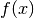
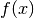

Proofs and Explanations¶
If you just want to get things done without worrying about why the calculations are exactly like they are then you’re in the wrong place, but if you got interested in the math itself you may enjoy reading some of this stuff.
I used a bunch of spooky formulas in this tutorial. Some of them are
definitions of e.g.  or
or  , but in this chapter we’ll focus on those
that aren’t and prove that they actually work.
, but in this chapter we’ll focus on those
that aren’t and prove that they actually work.
Two ways to define sine and cosine¶

In the unit circle trig section we defined and
with a unit circle, but then in
the triangle trig section we defined them with a
triangle. These definitions are compatible with each other. If we draw a
picture like the one at right and apply the triangle stuff to the angle  , we
get this:
, we
get this:


The first two formulas are obviously true with any , but the last one is a
bit more interesting. We found another way to define  , and it
also works with a triangle:
, and it
also works with a triangle:

Pythagorean Theorem¶
This is a well-known proof and I like it because it’s simple.
We can calculate the total area of the above square in a couple different ways:
- The square’s sides are each
 , so the area must be .
, so the area must be . - The square consists of the green square whose area is
 and 4 yellow
triangles with area
and 4 yellow
triangles with area  each. Total area is
each. Total area is  .
.
We must get the same area with both ways, so we get this equation:


Which functions have derivatives?¶
In the derivative chapter I said that most functions you’ll come across have a derivative. Let’s be a bit more specific. The derivative doesn’t exist in these cases:

The function is not continuous; that is, the graph consists of multiple lines. For example, this function is not continuous at
 and thus
is not defined:
and thus
is not defined:
- The graph of the function has a spike in it. Derivatives describe
“growing speed” and it isn’t clear how fast the values grow on top of a
spike. For example,
 has a derivative everywhere except at , just
like our  above.
has a derivative everywhere except at , just
like our  above.
Of course, there are more precise definitions about continuity and “spikes”, but this should be enough to give you some kind of idea about the limitations.
Derivative Rules¶
The derivative chapter contains a bunch of rules with no explainations or proofs about how they work. We also used this definition of derivative:

The warning in the beginning of the derivative chapter is all about this. Some
mathematicians (most?) don’t like this at all because  is a “small number”
and it isn’t really clear how it behaves in different situations. Here’s a
better definition:
is a “small number”
and it isn’t really clear how it behaves in different situations. Here’s a
better definition:

We just replaced with  . We also added a
. We also added a  which means we take the
limit as approaches
which means we take the
limit as approaches  . It’s just like our thing but more explicit
and also better-defined in some corner cases. I won’t go through the official
definition of a limit because most of the time limits are easy to calculate
without it.
. It’s just like our thing but more explicit
and also better-defined in some corner cases. I won’t go through the official
definition of a limit because most of the time limits are easy to calculate
without it.
These proofs are ordered so that they don’t use any derivative rules that haven’t been proved before them.

 ¶
¶
The graph
is a horizontal line, so the slope is zero.
We can also plug
into the definition of derivative:

 ¶
¶
The slope of the line
is
because every time
is incremented by something,
increments
and .
Again, we can confirm this with the definition of derivative:

¶
This is just like the previous rule, butand
.
This rule is particularly handy for differenciating long functions with many things added together. Let’s see what we get with the definition of derivative.
The rule can be proved in a very similar way.

¶
It’s not pretty, but we can use the definition.
![& \lim_{h\to0} \frac{f(x+h)g(x+h)-f(x)g(x)}{h} \\
&= \lim_{h\to0} \frac{\overbrace{f(x)g(x+h)-f(x)g(x+h)}^\text{this is 0}
+f(x+h)g(x+h)-f(x)g(x)}{h} \\
&= \lim_{h\to0} \frac{f(x+h)g(x+h)-f(x)g(x+h)+f(x)g(x+h)-f(x)g(x)}{h} \\
&= \lim_{h\to0} \frac{(f(x+h)-f(x))g(x+h)+f(x)(g(x+h)-g(x))}{h} \\
&= \lim_{h\to0} \left(
\frac{(f(x+h)-f(x))\ g(x+h)}{h} + \frac{f(x)\ (g(x+h)-g(x))}{h}
\right) \\
&= \lim_{h\to0} \left(
\frac{f(x+h)-f(x)}{h}g(x+h) + f(x)\frac{g(x+h)-g(x)}{h}
\right) \\
&= \lim_{h\to0} \left(\frac{f(x+h)-f(x)}{h}g(x+h)\right)
+ \lim_{h\to0}\left(f(x)\frac{g(x+h)-g(x)}{h}\right) \\
&= \left(\lim_{h\to0}\frac{f(x+h)-f(x)}{h}\right)
\left(\lim_{h\to0}g(x+h)\right)
+ f(x) \left(\lim_{h\to0}\frac{g(x+h)-g(x)}{h}\right) \\
&= f'(x)g(x) + f(x)g'(x)](_images/math/7b21e11b6b3e3b7d6d5ea90608f6e4837e585b81.png)
 ¶
¶
It’s easy to prove that this works for an individual
. Here I’ll prove that this works with all positive integers using a powerful technique known as induction.
Let’s start by showing that this works with e.g.
Next we’ll prove that if it works at then it also works at
where
is a positive integer. Let’s write things down just to be clear:
We assume: We’ll prove: Let’s use the
and
rules we proved above and the assumption.
We proved that if
then
. Now we know that the rule works when
, and so on.
Note that we only proved that it works when

 ¶
¶
We could prove this with the
rule because
, but we proved the
rule only for positive integers. Let’s survive without it. Again, it’s a mess, but it works.
![& \lim_{h\to0} \frac{\sqrt{x+h}-\sqrt x}{h} \\
&= \lim_{h\to0} \frac{(\sqrt{x+h}-\sqrt x)(\sqrt{x+h}+\sqrt x)}{
h \cdot (\sqrt{x+h} + \sqrt x)} \\
&= \lim_{h\to0} \frac{(\sqrt{x+h}-\sqrt x)\sqrt{x+h}
+(\sqrt{x+h}-\sqrt x)\sqrt x}{h \cdot (\sqrt{x+h} + \sqrt x)} \\
&= \lim_{h\to0} \frac{\sqrt{x+h}\sqrt{x+h}
\overbrace{-\sqrt x\sqrt{x+h}+\sqrt{x+h}\sqrt x}^\text{this is 0}
- \sqrt x\sqrt x}{h \cdot (\sqrt{x+h} + \sqrt x)} \\
&= \lim_{h\to0} \frac{\left(\sqrt{x+h}\right)^2 - \left(\sqrt x\right)^2}{
h \cdot (\sqrt{x+h} + \sqrt x)} \\
&= \lim_{h\to0} \frac{(x+h)-x}{h\cdot(\sqrt{x+h} + \sqrt x)} \\
&= \lim_{h\to0} \frac{h}{h\cdot(\sqrt{x+h} + \sqrt x)} \\
&= \lim_{h\to0} \frac{1}{\sqrt{x+h} + \sqrt x} \\
&= \frac{1}{\sqrt x + \sqrt x} \\
&= \frac{1}{2\ \sqrt x}](_images/math/3d58d1647dd84bafe077521e206acda6d9065351.png)
¶
This rule looks simple, but it’s surprisingly difficult to prove correctly while keeping it easy to read. Here’s the best proof I managed to make.
Let’s start by plugging stuff into the definition of derivative:
Note that I used
The rule can be used only if exists, and thus
must be continuous; see the derivative existence stuff above. So, if
(read: h approaches 0) then
and
.
If we put all this together we can set . Now it’s time to calculate
.
This looks nice, but we are not done yet! We divided by
when
? Practically it means that the graph is horizontal around
Careful here – we’re differenciating with respect to
is actually yet another constant. The
and
obviously doesn’t depend on the value of
We get the same answer with the rule that we were supposed to prove: